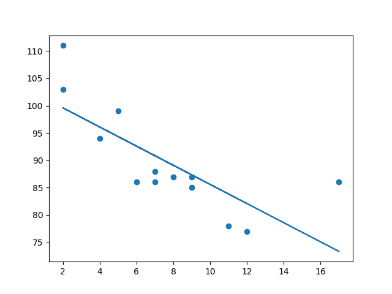
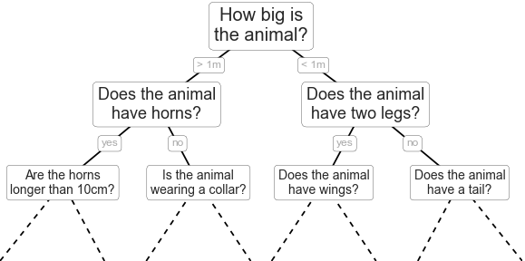
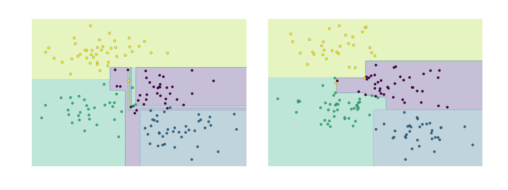

Supervised Learning
What is supervised learning?
Supervised learning is an approach to creating artificial intelligence (AI), where a computer algorithm is trained on input data that has been labeled for a particular output. The model is trained until it can detect the underlying patterns and relationships between the input data and the output labels, enabling it to yield accurate labeling results when presented with never-before-seen data.
In contrast to supervised learning is unsupervised learning. In this approach, the algorithm is presented with unlabeled data and is designed to detect patterns or similarities on its own, a process described in more detail below.
How does supervised learning work?
Like all machine learning algorithms, supervised learning is based on training. During its training phase, the system is fed with labeled data sets, which instruct the system what output is related to each specific input value. The trained model is then presented with test data: This is data that has been labeled, but the labels have not been revealed to the algorithm. The aim of the testing data is to measure how accurately the algorithm will perform on unlabeled data.
In neural network algorithms, the supervised learning process is improved by constantly measuring the resulting outputs of the model and fine-tuning the system to get closer to its target accuracy. The level of accuracy obtainable depends on two things: the available labeled data and the algorithm that is used. In addition:
- Training data must be balanced and cleaned. Garbage or duplicate data will skew the AI's understanding -- hence, data scientists must be careful with the data the model is trained on.
- The diversity of the data determines how well the AI will perform when presented with new cases; if there are not enough samples in the training data set, the model will falter and fail to yield reliable answers.
- High accuracy, paradoxically, is not necessarily a good indication; it could also mean the model is suffering from overfitting -- i.e., it is overtuned to its particular training data set. Such a data set might perform well in test scenarios but fail miserably when presented with real-world challenges. To avoid overfitting, it is important that the test data is different from the training data to ensure the model is not drawing answers from its previous experience, but instead that the model's inference is generalized.
- The algorithm, on the other hand, determines how that data can be put in use. For instance, deep learning algorithms can be trained to extract billions of parameters from their data and reach unprecedented levels of accuracy, as demonstrated by OpenAI's GPT-3.
Classification algorithms
A classification algorithm aims to sort inputs into a given number of categories or classes, based on the labeled data it was trained on. Classification algorithms can be used for binary classifications such as filtering email into spam or non-spam and categorizing customer feedback as positive or negative. Feature recognition, such as recognizing handwritten letters and numbers or classifying drugs into many different categories, is another classification problem solved by supervised learning.
Regression models
Regression tasks are different, as they expect the model to produce a numerical relationship between the input and output data. Examples of regression models include predicting real estate prices based on zip code, or predicting click rates in online ads in relation to time of day, or determining how much customers would be willing to pay for a certain product based on their age.
Algorithms commonly used in supervised learning programs include the following:
- Linear Regression
- Logistic Regression
- Neural Networks
- Linear Discriminant Analysis
- Decision Trees
- Similarity Learning
- Bayseian Logic
- Support Vector Machines (SVMs)
- Random Forests
Example
Import scipy and draw the line of Linear Regression:
import matplotlib.pyplot as plt
from scipy import stats
x = [5,7,8,7,2,17,2,9,4,11,12,9,6]
y =
[99,86,87,88,111,86,103,87,94,78,77,85,86]
slope, intercept, r,
p, std_err = stats.linregress(x, y)
def myfunc(x):
return slope * x + intercept
mymodel = list(map(myfunc, x))
plt.scatter(x, y)
plt.plot(x, mymodel)
plt.show()
Result:

import numpy as np class NeuralNetwork(): def __init__(self): # seeding for random number generation np.random.seed(1) #converting weights to a 3 by 1 matrix with values from -1 to 1 and mean of 0 self.synaptic_weights = 2 * np.random.random((3, 1)) - 1 def sigmoid(self, x): #applying the sigmoid function return 1 / (1 + np.exp(-x)) def sigmoid_derivative(self, x): #computing derivative to the Sigmoid function return x * (1 - x) def train(self, training_inputs, training_outputs, training_iterations): #training the model to make accurate predictions while adjusting weights continually for iteration in range(training_iterations): #siphon the training data via the neuron output = self.think(training_inputs) #computing error rate for back-propagation error = training_outputs - output #performing weight adjustments adjustments = np.dot(training_inputs.T, error * self.sigmoid_derivative(output)) self.synaptic_weights += adjustments def think(self, inputs): #passing the inputs via the neuron to get output #converting values to floats inputs = inputs.astype(float) output = self.sigmoid(np.dot(inputs, self.synaptic_weights)) return output if __name__ == "__main__": #initializing the neuron class neural_network = NeuralNetwork() print("Beginning Randomly Generated Weights: ") print(neural_network.synaptic_weights) #training data consisting of 4 examples--3 input values and 1 output training_inputs = np.array([[0,0,1], [1,1,1], [1,0,1], [0,1,1]]) training_outputs = np.array([[0,1,1,0]]).T #training taking place neural_network.train(training_inputs, training_outputs, 15000) print("Ending Weights After Training: ") print(neural_network.synaptic_weights) user_input_one = str(input("User Input One: ")) user_input_two = str(input("User Input Two: ")) user_input_three = str(input("User Input Three: ")) print("Considering New Situation: ", user_input_one, user_input_two, user_input_three) print("New Output data: ") print(neural_network.think(np.array([user_input_one, user_input_two, user_input_three]))) print("Wow, we did it!")
*We managed to create a simple neural network.
*The neuron began by allocating itself some random weights. Thereafter, it trained itself using the training examples.
*Consequently, if it was presented with a new situation [1,0,0], it gave the value of 0.9999584.
Here is the output for running the code:

Motivating Random Forests: Decision Trees¶
Random forests are an example of an ensemble learner built on decision trees. For this reason we'll start by discussing decision trees themselves.
Decision trees are extremely intuitive ways to classify or label objects: you simply ask a series of questions designed to zero-in on the classification. For example, if you wanted to build a decision tree to classify an animal you come across while on a hike, you might construct the one shown here:
The binary splitting makes this extremely efficient: in a well-constructed tree, each question will cut the number of options by approximately half, very quickly narrowing the options even among a large number of classes. The trick, of course, comes in deciding which questions to ask at each step. In machine learning implementations of decision trees, the questions generally take the form of axis-aligned splits in the data: that is, each node in the tree splits the data into two groups using a cutoff value within one of the features. Let's now look at an example of this.
Creating a decision tree¶
Consider the following two-dimensional data, which has one of four class labels:
from sklearn.datasets import make_blobs
X, y = make_blobs(n_samples=300, centers=4,
random_state=0, cluster_std=1.0)
plt.scatter(X[:, 0], X[:, 1], c=y, s=50, cmap='rainbow');
A simple decision tree built on this data will iteratively split the data along one or the other axis according to some quantitative criterion, and at each level assign the label of the new region according to a majority vote of points within it. This figure presents a visualization of the first four levels of a decision tree classifier for this data:

Notice that after the first split, every point in the upper branch remains unchanged, so there is no need to further subdivide this branch. Except for nodes that contain all of one color, at each level every region is again split along one of the two features.
This process of fitting a decision tree to our data can be done in Scikit-Learn with the DecisionTreeClassifier estimator:
from sklearn.tree import DecisionTreeClassifier
tree = DecisionTreeClassifier().fit(X, y)
Let's write a quick utility function to help us visualize the output of the classifier:
def visualize_classifier(model, X, y, ax=None, cmap='rainbow'):
ax = ax or plt.gca()
# Plot the training points
ax.scatter(X[:, 0], X[:, 1], c=y, s=30, cmap=cmap,
clim=(y.min(), y.max()), zorder=3)
ax.axis('tight')
ax.axis('off')
xlim = ax.get_xlim()
ylim = ax.get_ylim()
# fit the estimator
model.fit(X, y)
xx, yy = np.meshgrid(np.linspace(*xlim, num=200),
np.linspace(*ylim, num=200))
Z = model.predict(np.c_[xx.ravel(), yy.ravel()]).reshape(xx.shape)
# Create a color plot with the results
n_classes = len(np.unique(y))
contours = ax.contourf(xx, yy, Z, alpha=0.3,
levels=np.arange(n_classes + 1) - 0.5,
cmap=cmap, clim=(y.min(), y.max()),
zorder=1)
ax.set(xlim=xlim, ylim=ylim)
Now we can examine what the decision tree classification looks like:
visualize_classifier(DecisionTreeClassifier(), X, y)
If you're running this notebook live, you can use the helpers script included in The Online Appendix to bring up an interactive visualization of the decision tree building process:
# helpers_05_08 is found in the online appendix
import helpers_05_08
helpers_05_08.plot_tree_interactive(X, y);
Notice that as the depth increases, we tend to get very strangely shaped classification regions; for example, at a depth of five, there is a tall and skinny purple region between the yellow and blue regions. It's clear that this is less a result of the true, intrinsic data distribution, and more a result of the particular sampling or noise properties of the data. That is, this decision tree, even at only five levels deep, is clearly over-fitting our data.
Decision trees and over-fitting¶
Such over-fitting turns out to be a general property of decision trees: it is very easy to go too deep in the tree, and thus to fit details of the particular data rather than the overall properties of the distributions they are drawn from. Another way to see this over-fitting is to look at models trained on different subsets of the data—for example, in this figure we train two different trees, each on half of the original data:
It is clear that in some places, the two trees produce consistent results (e.g., in the four corners), while in other places, the two trees give very different classifications (e.g., in the regions between any two clusters). The key observation is that the inconsistencies tend to happen where the classification is less certain, and thus by using information from both of these trees, we might come up with a better result!
If you are running this notebook live, the following function will allow you to interactively display the fits of trees trained on a random subset of the data:
# helpers_05_08 is found in the online appendix
import helpers_05_08
helpers_05_08.randomized_tree_interactive(X, y)
Just as using information from two trees improves our results, we might expect that using information from many trees would improve our results even further.
# helpers_05_08 is found in the online appendix
import helpers_05_08
helpers_05_08.randomized_tree_interactive(X, y)
Ensembles of Estimators: Random Forests
This notion—that multiple overfitting estimators can be combined to reduce the effect of this overfitting—is what underlies an ensemble method called bagging. Bagging makes use of an ensemble (a grab bag, perhaps) of parallel estimators, each of which over-fits the data, and averages the results to find a better classification. An ensemble of randomized decision trees is known as a random forest.
This type of bagging classification can be done manually using Scikit-Learn's BaggingClassifier meta-estimator, as shown here:
from sklearn.tree import DecisionTreeClassifier
from sklearn.ensemble import BaggingClassifier
tree = DecisionTreeClassifier()
bag = BaggingClassifier(tree, n_estimators=100, max_samples=0.8,
random_state=1)
bag.fit(X, y)
visualize_classifier(bag, X, y)

In this example, we have randomized the data by fitting each estimator with a random subset of 80% of the training points. In practice, decision trees are more effectively randomized by injecting some stochasticity in how the splits are chosen: this way all the data contributes to the fit each time, but the results of the fit still have the desired randomness. For example, when determining which feature to split on, the randomized tree might select from among the top several features. You can read more technical details about these randomization strategies in the Scikit-Learn documentation and references within.
In Scikit-Learn, such an optimized ensemble of randomized decision trees is implemented in the RandomForestClassifier estimator, which takes care of all the randomization automatically.
All you need to do is select a number of estimators, and it will very quickly (in parallel, if desired) fit the ensemble of trees:
from sklearn.ensemble import RandomForestClassifier
model = RandomForestClassifier(n_estimators=100, random_state=0)
visualize_classifier(model, X, y);
We see that by averaging over 100 randomly perturbed models, we end up with an overall model that is much closer to our intuition about how the parameter space should be split.
We see that by averaging over 100 randomly perturbed models, we end up with an overall model that is much closer to our intuition about how the parameter space should be split.
Random Forest Regression¶
In the previous section we considered random forests within the context of classification.
Random forests can also be made to work in the case of regression (that is, continuous rather than categorical variables). The estimator to use for this is the RandomForestRegressor, and the syntax is very similar to what we saw earlier.
Consider the following data, drawn from the combination of a fast and slow oscillation:
rng = np.random.RandomState(42)
x = 10 * rng.rand(200)
def model(x, sigma=0.3):
fast_oscillation = np.sin(5 * x)
slow_oscillation = np.sin(0.5 * x)
noise = sigma * rng.randn(len(x))
return slow_oscillation + fast_oscillation + noise
y = model(x)
plt.errorbar(x, y, 0.3, fmt='o');
Using the random forest regressor, we can find the best fit curve as follows:
from sklearn.ensemble import RandomForestRegressor
forest = RandomForestRegressor(200)
forest.fit(x[:, None], y)
xfit = np.linspace(0, 10, 1000)
yfit = forest.predict(xfit[:, None])
ytrue = model(xfit, sigma=0)
plt.errorbar(x, y, 0.3, fmt='o', alpha=0.5)
plt.plot(xfit, yfit, '-r');
plt.plot(xfit, ytrue, '-k', alpha=0.5);
Here the true model is shown in the smooth gray curve, while the random forest model is shown by the jagged red curve. As you can see, the non-parametric random forest model is flexible enough to fit the multi-period data, without us needing to specifying a multi-period model!
Example: Random Forest for Classifying Digits¶
Earlier we took a quick look at the hand-written digits data (see Introducing Scikit-Learn). Let's use that again here to see how the random forest classifier can be used in this context.
from sklearn.datasets import load_digits
digits = load_digits()
digits.keys()
dict_keys(['target', 'data', 'target_names', 'DESCR', 'images'])
To remind us what we're looking at, we'll visualize the first few data points:
# set up the figure
fig = plt.figure(figsize=(6, 6)) # figure size in inches
fig.subplots_adjust(left=0, right=1, bottom=0, top=1, hspace=0.05, wspace=0.05)
# plot the digits: each image is 8x8 pixels
for i in range(64):
ax = fig.add_subplot(8, 8, i + 1, xticks=[], yticks=[])
ax.imshow(digits.images[i], cmap=plt.cm.binary, interpolation='nearest')
# label the image with the target value
ax.text(0, 7, str(digits.target[i]))
We can quickly classify the digits using a random forest as follows:
from sklearn.cross_validation import train_test_split
Xtrain, Xtest, ytrain, ytest = train_test_split(digits.data, digits.target,
model = RandomForestClassifier(n_estimators=1000)
model.fit(Xtrain, ytrain)
ypred = model.predict(Xtest)
We can take a look at the classification report for this classifier:
from sklearn import metrics
print(metrics.classification_report(ypred, ytest))
precision recall f1-score support
0 1.00 0.97 0.99 38
1 1.00 0.98 0.99 44
2 0.95 1.00 0.98 42
3 0.98 0.96 0.97 46
4 0.97 1.00 0.99 37
5 0.98 0.96 0.97 49
6 1.00 1.00 1.00 52
7 1.00 0.96 0.98 50
8 0.94 0.98 0.96 46
9 0.96 0.98 0.97 46
avg / total
0.98 0.98 0.98 450
And for good measure, plot the confusion matrix:
from sklearn.metrics import confusion_matrix
mat = confusion_matrix(ytest, ypred)
sns.heatmap(mat.T, square=True, annot=True, fmt='d', cbar=False)
plt.xlabel('true label')
plt.ylabel('predicted label');
* We find that a simple, untuned random forest results in a very accurate classification of the digits data.
When choosing a supervised learning algorithm, there are a few things that should be considered. The first is the bias and variance that exist within the algorithm, as there is a fine line between being flexible enough and too flexible. Another is the complexity of the model or function that the system is trying to learn. As noted, the heterogeneity, accuracy, redundancy and linearity of the data should also be analyzed before choosing an algorithm.